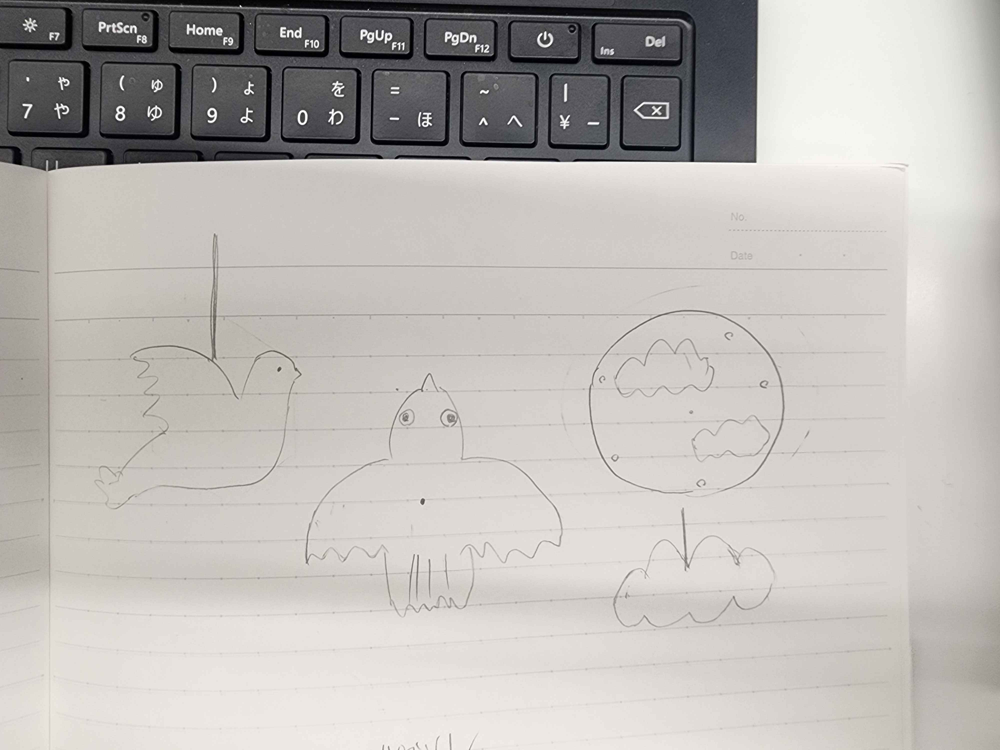
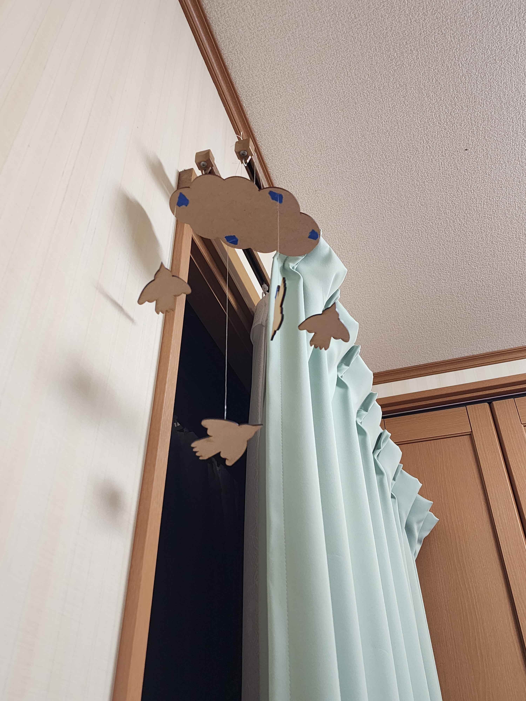
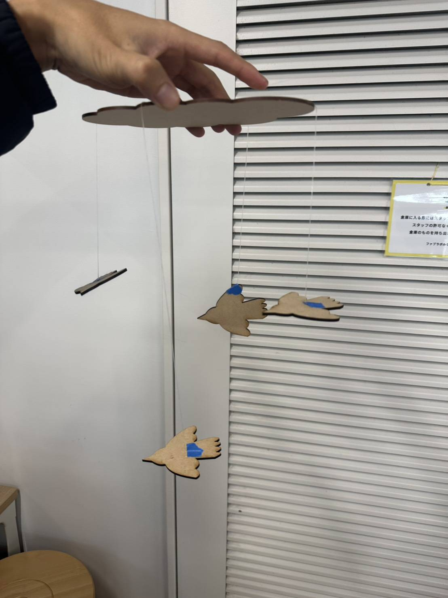

構想
今回は人の心を動かす作品を考えるという課題でモビールを作ろうと思いました昔歯医者で紙のモビールがあり、小さい頃の私はずっと眺めて落ち着いた気分になっていました
また風の強さによって激しく動いたり、ゆっくり動いたりするので感情を動かしやすいと思い考えました。
書き出し
【構想時のスケッチ】今回は天井に飾る物なので空を飛ぶ鳥を構想しました。


【完成作品】
 
設計図
aiファイル作品説明
鳥のモビール天井に飾り、つるすことで風に揺られて回ったりする、風の強さによって動きが変わる
制作理由
歯医者や小児科といった子供が怖がるところにこのモビールが置いてあり子供の感情を落ち着かせる効果があると思い製作しました実際他の人に見せたところ落ち着くという感情よりかわいいという感情が出ていましたが結果的に感情を動かせたと思います。
完成写真に載っているつるしたモビールは自分の部屋に飾ってとったのですが落ち着きを感じる事が出来ました。
まとめ
今回作成では自分でアイデアで人の感情を動かすという商品開発において重要なことの考え方について学ぶ事が出来た。
今回の作成は単純な設計だったのでもっと複雑な作品を様々な素材でレーザーカットして作品を作ってみるのもおもしろそうだと思った。。